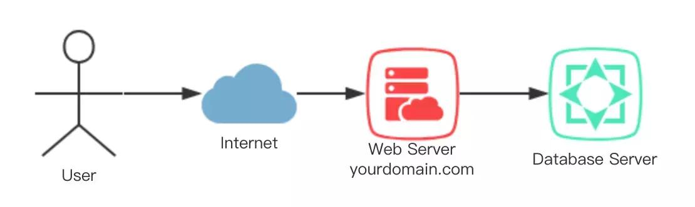

原文连接:https://www.cnblogs.com/sevencutekk/p/11506540.html
前言
闲来无事写篇文章总结下负载均衡。
正文
负载均衡
负载均衡是高可用架构的一个关键组件，主要用来提高性能和可用性，通过负载均衡将流量分发到多个服务器，同时多服务器能够消除这部分的单点故障。
当然负载均衡器本身就是一个单点故障隐患，可以考虑文章后面说的负载均衡双机热备或其他方案消除单点故障提高可用性。
一个没有使用负载均衡的Web架构一般会长得像这样：

没有负载均衡的架构
在这个例子里面，用户直接通过yourdomain.com连接Web Server，如果这一个Web Server挂了那么整个系统都无法使用，也就是我们常说的系统中的单点故障，同样如果大量的用户同时访问这一台服务器，那么这些用户很可能会遇到加载时间缓慢或者根本无法连接的问题。
这部分的单点故障可以通过引入负载均衡器和至少另一个Web Server来缓解。一般来说所有后端服务器会提供相同的内容，以便用户无论访问哪个服务器都会收到一致的内容。同时由于有多台服务器同时提供服务，也加大了系统的负载能力提高了性能。
负载均衡可以处理哪些类型的流量
由于一般程序员接触到的负载均衡可能大多都是处理HTTP、HTTPS流量的，但实际上负载均衡还可以处理TCP和UDP流量（比如对数据库集群的访问、DNS等）。
负载均衡算法
负载均衡算法用于确定流量应该被分发到哪一个健康的服务器上，常见的几个算法如下：
Round Robin — 轮转（Round Robin）意味着服务器会被按顺序地选择，比如负载均衡器会将第一个请求分配给第一个服务器，然后下一个请求分配给第二个服务器，这样分配下去分配完一轮之后回到开头分配给第一个服务器（操作系统调度算法复习一下）。这种方式比较适合各服务器处理能力相同而且每个业务处理量差不多的时候。
Least Connections — 最少连接（Least Connections）这个算法意味着负载均衡器会选择当前连接最少的服务器。
IP hash — 在这个算法下，负载均衡器根据请求源的IP来决定分发给哪个服务器。这个方法保证了一个特定的用户会一直访问相同的服务器。
其他还有一些不算太常见的算法，比如Url hash、Random等。
健康检测（health checks）
在负载均衡算法一节中我们有一个前提，就是流量只会被分配到健康的服务器上，那么负载均衡器怎么去判断服务器现在是否健康呢？
为了监控健康的服务器，健康检查一般会通过配置的协议和端口尝试去连接服务器来保证服务器正在监听。如果一个服务器的健康检查失败了，也就是说服务器无法正常响应请求，那么就会被自动的移除池子中，流量也不会被分配到这个坏掉的服务器直到它能通过健康检查。
这块具体的方式可以参考阿里云关于负载均衡的文档健康检查原理
负载均衡如何处理状态
我们都知道基于session的用户认证会在服务器存有session的一些信息，但当系统引入负载均衡的时候这样会出现一些问题。
举个电商网站的例子，当用户U发送的登录请求被分发到了服务器S1并在服务器中记录了session信息，而当用户想要提交购物请求的时候这个请求被分发到了服务器S2，但服务器S2并没有保存用户U的session信息。
为了解决这个问题一个是可以使用之前说的IP hash算法，这个算法根据IP来分配流量对应的服务器，所以可以保证同一个用户的流量会访问到同一个服务器。另一个应用层的方法是sticky session，中文应该叫粘性会话，负载均衡器会设置一个cookie然后带有这个cookie的session都会被分配到同一个服务器上。
负载均衡双机热备（Hot standby）
正如开头所说，负载均衡器本身就是一个单点故障隐患，其中一个解决方案就是双机热备（提高可用性的一大基本方法就是冗余）。
双机热备方案为了解决负载均衡器的单点故障问题，引入了第二个负载均衡器，当主节点GG了之后切换到备用节点。在网上找了个比较形象的gif:

我自己之前毕业设计的架构用了双机热备，实现上主要是通过keepalived实现nginx的高可用
最后
这篇文章算是对于负载均衡的一个初步总结和一些自己的理解，比较适合希望对负载均衡有个初步全面了解的人，但由于我个人只是个萌新所以很多进阶的东西比如LVS啥的和一些大厂的实践分析都没加也暂时没能力加，以后如果有接触再补上吧（坑我先挖了）。小编在这里继续的分享资料，需要关于分布式，微服务，性能优化，Spring，MyBatis的等源码知识点的录像视频资料和面试题（附答案），请加我的交流群772300343获取！！！